| Dự án | GSM Driver Income AI Advisor — trợ lý hỗ trợ tài xế Xanh SM cải thiện thu nhập |
| Thành viên | Trần Quốc Khánh · Lưu Thiện Việt Cường |
| Kỳ báo cáo | 23/07/2026 – 01/08/2026 (tuần 2) |
| Người nhận | Mentor — bản báo cáo để đánh giá |
| Ngày phát hành | 01/08/2026 |
Đây là điều chúng em muốn nói trước mọi kết quả, vì nó quyết định cách đọc toàn bộ phần sau:
scripts/measure_e10.py:9).DONE-CODE / WAITING-VERDICT, không dùng "DONE". Quy ước nội
bộ: chưa được người review thì code xong vẫn không gọi là xong. Hiện có 20 mục đang chờ
review.| # | Mục tiêu đặt ra | Trạng thái | Bằng chứng |
|---|---|---|---|
| M1 | Trả lời được câu hỏi trung tâm: advisor mất thông tin cầu (λ) thì còn lại bao nhiêu giá trị? | ✅ Đo xong 5 arm, n=100 | §11.1 |
| M2 | Dựng hạ tầng đo tin được: ghép cặp CRN, bootstrap CI, cổng thống kê chặn kết luận sai | ✅ Đo xong, cổng đã bắn thật | §11.3, §4.3 |
| M3 | Guardrail sức khoẻ + hệ thống để advisor không tối ưu tiền bằng cách hại tài xế/hệ thống | ✅ DONE-CODE — nối nguồn 01/08 |
§11.4, §7.4 |
| M4 | Chuẩn hoá đường dữ liệu theo schema thật: 13 bảng → view L3 → solver | ✅ Xong — view + kiểm thử theo đúng schema GSM; sản phẩm chạy trên dữ liệu mô phỏng theo đúng phạm vi được phép | §6.4 |
| M5 | Sản phẩm demo được: app tài xế + khu mô phỏng | ✅ Chạy được, WAITING-VERDICT |
§9 |
Ngoài 5 mục tiêu trên, tuần 2 phát sinh một nhánh công việc không lên kế hoạch trước và nó chiếm phần lớn hai ngày cuối: sau khi hoàn tất M1, nhóm phát hiện thước đo dùng để kết luận M1 bị sai, phải sửa thước và đo lại toàn bộ (§12.2). Đây là phần chúng em cho là đáng báo cáo nhất, dù nó làm con số headline giảm xuống.
Thu nhập một ca không chỉ phụ thuộc số cuốc. Trong một ca, tài xế đồng thời phải cân: thời gian còn lại · cầu dự kiến theo từng khung giờ · trạng thái pin và thời gian đổi/sạc · mốc điểm thưởng đang theo · thời gian chờ · và ảnh hưởng của một lựa chọn lên kết quả cuối ca. Đây là bài toán tối ưu đa biến có ràng buộc, nhưng tài xế phải giải nó trên đường, trong vài giây.
Sản phẩm định vị là trợ lý hỗ trợ quyết định: đưa phương án + lý do + điều kiện, rồi để tài xế tự quyết. Không phải chatbot trả lời chung.
| Thời điểm | Câu hỏi của tài xế | Sản phẩm cung cấp |
|---|---|---|
| Trước ca | Đặt mục tiêu gì, phân bổ thời gian thế nào? | Kế hoạch ca + khoảng cách tới mốc thưởng |
| Trong ca | Nên chạy tiếp, đứng chờ, chuyển vùng, nghỉ hay đi sạc? | Phương án theo trạng thái hiện tại + dự báo cầu |
| Sau ca | Vì sao ca chưa đạt kỳ vọng? | Phân tích thời gian chờ, cuốc, điểm, mẫu hành vi |
Đây là ràng buộc cứng, được thi hành bằng cơ chế trong code (§7), không phải bằng lời hứa:
src/gsm_sim/dispatcher.py 151 dòng, 0 lần tham
chiếu advice|advisor|bridge);Mô phỏng chỉ có giá trị nếu tham số của nó đến từ thực tế. Trước khi viết engine, nhóm nghiên cứu
chính sách và cấu trúc chi phí thật của GSM, và gắn nhãn độ tin cậy cho từng con số —
REAL (từ nguồn official có URL, đã fetch), PROXY (suy từ nguồn gián tiếp), ASSUMPTION
(nhóm tự đặt, chưa có nguồn).
| Nội dung | Số thật | Nhãn |
|---|---|---|
| Chia sẻ doanh số Bike | "lên tới 75%", hiệu lực 02/03/2026 | REAL — greensm.com |
| Mốc điểm → thưởng tuần, Khu vực 1 (HN/HCM/ĐN/BD) | 400–699đ: 200k · 700–1.099đ: 400k · 1.100–1.399đ: 800k · ≥1.400đ: mốc cao nhất | REAL |
| Điểm mỗi cuốc (snapshot 07/2025 — sim đang dùng) | cao điểm 6–8h & 16–18h: 10 điểm · giờ thường: 5 điểm | REAL (snapshot) |
| Điều kiện thưởng tuần | ≥5 ngày hoạt động/tuần + nhận ≥85% + hoàn thành ≥85%; bản mới thêm điểm sao > 4,85 | REAL |
| Khoán tuần — truy thu khi không đạt | 20% phần doanh số chưa đạt (toàn quốc), tới 40% ở HN/HCM | REAL |
| Bỏ phạt tỷ lệ nhận/hoàn thành (23/02/2026) | "Không áp dụng hình thức xử phạt khi tỷ lệ nhận chuyến và tỷ lệ hoàn thành thấp" | REAL |
| Đảm bảo thu nhập 3 tháng đầu | HN/HCM: full-time tới 600.000đ/ngày, part-time tối thiểu 360.000đ/ngày | REAL |
| Thưởng thâm niên | 6–9 tháng: 500k/tháng · 9–12 tháng: 700k · ≥12 tháng: 1tr | REAL |
Một phát hiện làm đổi hướng thiết kế: chính sách 23/02/2026 bỏ hình thức phạt theo tỷ lệ nhận/hoàn thành và chuyển sang khoán tuần + truy thu. Nghĩa là cấu trúc động lực của tài xế đã dịch từ "tránh bị phạt" sang "đạt khoán". Nghiên cứu ban đầu của nhóm (dựa trên bản cũ) đã lỗi thời và phải cập nhật lại toàn bộ — đây là lý do trong repo có một vòng "research refresh" riêng.
| Nội dung | Số thật | Nhãn |
|---|---|---|
| Đổi pin tại trạm công cộng | 9.000đ/lượt | REAL |
| Miễn phí đổi pin cho tài xế Platform độc quyền | không giới hạn, tới 31/03/2029 | REAL |
| Thuê pin sau ưu đãi | 175.000đ/tháng (1 pin) · 300.000đ/tháng (2 pin) | REAL |
| Dung lượng pin | pack đổi LFP 1,5 kWh · Feliz S / Evo200 3,5 kWh LFP | REAL |
| Sạc tại nhà | ~70–93đ/km; sau ưu đãi ~150đ/km | PROXY |
Vì phí đổi pin đang miễn phí tới 2029, mô hình chi phí mặc định đặt swap_fee = 0 — nhưng
tham số vẫn để mở để quét được khi ưu đãi kết thúc. Đây là ví dụ cho nguyên tắc: số có thể đổi
thì phải là tham số, không phải hằng số chôn trong code.
| Thiếu | Hệ quả |
|---|---|
| Dữ liệu về mệt và tai nạn | Không thể định giá "gợi ý nghỉ đáng bao nhiêu tiền" ⇒ nhóm từ chối đưa ra con số đó (§12.4) |
| Telemetry pin trong 13 bảng GSM | SOC và tầm đi phải dùng PROXY tất định, không phải số đo |
| Tỷ lệ nghe lời của tài xế thật | Tỷ lệ trong mô phỏng là ASSUMPTION — dùng để quét độ nhạy, không phải để dự báo |
4/13 bảng chưa có danh sách cột (gồm trips) |
Chưa verify được schema khớp GSM ⇒ 4 test đang skip (§11.5) |
| Trần ca 12h/ngày | ASSUMPTION — không có cửa sổ ca khai báo trong bảng thật |
Nhóm chủ trương: thiếu thì nói thiếu. Một khoảng trống được khai báo an toàn hơn một con số được điền cho đủ bảng.
Advisor có 5 kênh can thiệp. Điều đáng nói là trạng thái bật/tắt của chúng do kết quả đo quyết định, không do ý muốn:
| Kênh | Làm gì | Trạng thái | Vì sao |
|---|---|---|---|
positioning_overrides |
Khi bản năng tài xế là đứng chờ, gợi ý chuyển sang ô có cầu cao hơn | ✅ BẬT (wait_only) |
Kênh duy nhất được duyệt: đo ra dương và bền qua nhiều vòng |
shift_plan |
Lập lịch ca (chạy/nghỉ/sạc) | ❌ TẮT | Đo ra có hại — quyết định ĐA-07 |
accept_lift |
Nâng nhẹ xu hướng nhận cuốc (step 0,10, trần 0,15) |
❌ TẮT | Đo ra không hiệu quả |
shift_extend |
Gợi ý kéo dài ca | ❌ TẮT | Đo ra không hiệu quả |
rest_window |
Gợi ý khung nghỉ | ❌ TẮT | Trong A/B một-ngày kênh này nói 0/873 lần — cần chế độ nhiều ngày mới đo được (§12.4) |
Nguyên tắc rút ra: "không hiệu quả thì TẮT để advisor im lặng". Một trợ lý nói ít mà đúng tốt hơn một trợ lý nói nhiều. Đây cũng là lý do §9.2 thiết kế "card im lặng".
Mọi con số tài chính hiển thị cho tài xế phải đi qua một trong chín solver này. Solver là code thuần, tất định, có test — không phải LLM.
| Solver | Bài toán | Phương pháp |
|---|---|---|
S1 bonus_feasibility |
Còn h giờ và p điểm hiện tại, có kịp mốc thưởng kế tiếp không? Cần thêm bao nhiêu cuốc/giờ? | Đại số đóng trên tốc độ điểm/giờ theo khung giờ + kiểm khả thi so quỹ giờ |
S2 shift_dp |
Phân bổ các khoảng ONLINE / REST / SWAP / END trong thời gian còn lại |
Dynamic programming trên trạng thái (thời gian còn lại, SOC, điểm, nợ nghỉ) |
S3 f3_patterns |
Ca vừa rồi có mẫu hành vi nào làm giảm hiệu quả? | Thống kê mô tả trên chuỗi phân đoạn |
S4 capacity_alloc |
Nếu nhiều tài xế cùng nhận một gợi ý thì trạm/khu có chịu được không? | Linear assignment (scipy.optimize.linear_sum_assignment) chống dồn cục |
S5 weekly_khoan |
Khoán tuần: còn thiếu bao nhiêu, có khả thi không? | Đại số + kiểm ràng buộc, tách gross/payout |
S6 mission_knapsack |
Chọn tổ hợp nhiệm vụ nào trong quỹ thời gian còn lại? | 0/1 knapsack (reward vs effort, capacity = giờ còn) |
S7 idle_reduction |
Khoảng chờ dài nào đáng chuyển thành di chuyển/nghỉ? | Phát hiện đoạn + so sánh chi phí cơ hội theo cầu giờ |
S8 penalty_explain |
Khoản trừ đến từ đâu, ngưỡng chính sách nào? | Tra cứu + đối chiếu PolicyBundle có version |
S9 anomaly_alert |
Chỉ số nào lệch bất thường so với chính tài xế đó? | So sánh với phân phối lịch sử cá nhân |
Mỗi solver trả về một SolverReport gồm: problem_digest (phát biểu bài toán), numbers with
source (mỗi số kèm nguồn), sensitivity, và infeasible_reason khi bài toán không khả thi.
Trường "nguồn cho từng số" chính là thứ khiến tầng agent không thể bịa số (§7.2).
Đây là cơ chế tạo ra "thế giới vận hành" để đánh giá advisor. Không phải tính năng cho advisor điều khiển hệ thống GSM.
Tầng 1 — thu hẹp ứng viên bằng H3. Với mỗi đơn, chỉ xét tài xế trong grid_disk(pickup_cell,
k_max) ở H3 resolution 9 (lưới vận hành ~85 ô lõi; resolution 8 dùng để tổng hợp
heatmap). Điều này giảm số cặp phải tính và phản ánh thực tế: không phải mọi tài xế trong thành
phố đều là ứng viên cho một đơn.
Tầng 2 — ghép cặp theo lô, tối ưu tổng ETA. Các cặp (đơn, tài xế) khả thi vào một ma trận chi
phí với cost = ETA_pickup; cặp không khả thi gán INFEASIBLE = 1e6; giải bằng
linear_sum_assignment (thuật toán Hungarian), chỉ nhận cặp có ETA ≤ eta_max_min, mỗi tài
xế tối đa 1 đơn/tick.
Vì sao không dùng greedy: greedy có thể chọn tài xế gần theo đường chim bay nhưng ETA thực tế xấu
hơn, và xử lý đơn theo order_id làm đơn tới sau mất ứng viên khả thi duy nhất. Greedy vẫn được
giữ làm baseline đối chiếu và làm đường lui khi n_orders × n_drivers > 200.000 cặp.
ETA tính bằng haversine giữa toạ độ liên tục thật của tài xế và điểm đón, nhân hệ số đường thật theo cặp ô từ ma trận OSRM cache offline — không dùng hệ số phẳng, vì hệ số OSRM thật biến thiên 1,00 → 3,50 (dùng hệ số phẳng từng làm 293/3.520 lượt bị bỏ oan).
(a) Ghép cặp CRN (common random numbers). Trace ngoại sinh (đơn hàng, thời tiết) được sinh
trước khi chạy, tất định theo seed, và dùng chung cho cả hai arm. Hai thế giới chỉ khác
đúng một điều: arm B nghe advisor. Nhờ vậy Δ per-seed loại được phương sai ngoại sinh —
Δ_X(s) = B_X(s) − A(s), và so arm-vs-arm là hiệu của hiệu trên từng seed.
(b) Bootstrap CI theo cặp. n_boot = 5000, alpha = 0,05, seed = 12345 — resample theo
seed (đơn vị độc lập), không theo tài xế hay theo ngày, vì tài xế trong cùng một run không độc
lập với nhau.
(c) Ngưỡng cỡ mẫu được mã hoá trong code, không tuỳ ý:
MIN_SEEDS_FOR_SIGNIFICANCE = 30 cho so A/B thường; MIN_SEEDS_FOR_VARIANT_COMPARISON = 100 cho
so hai biến thể advice (bài toán khó hơn, cần cỡ mẫu lớn hơn). Kèm MDE báo cùng mỗi Δ:
MDE cho biết ta chỉ loại trừ được suy giảm lớn hơn mức đó — không phải "suy giảm bằng 0".
(d) Cổng thống kê Poisson-binomial cho tỷ lệ nghe lời. Mỗi lần advisor nói, việc tài xế nghe hay không là một Bernoulli với xác suất riêng theo archetype ⇒ tổng số lần nghe theo Poisson-binomial. Cổng tính
với pᵢ lấy từ tỷ lệ danh nghĩa của chính run đó (không hard-code), và TREO kết luận khi
|z| > 4,0 (ADHERENCE_Z_MAX = 4.0), kèm ngưỡng mẫu số tối thiểu 20 để không phán trên mẫu quá
nhỏ. Cổng này đã thực sự bắn và chặn một kết luận sai — §11.3.
(e) Ước lượng không thiên lệch cho tiêu chí cá nhân. Dùng cohort estimator (trung bình trên mọi tài xế, tách theo archetype), không dùng argmax. Lý do ở §11.6 — đây là bài học đắt nhất của nhóm.
(f) Công bằng và tập trung. Gini trên phân phối payout (bất bình đẳng thu nhập giữa tài xế) và HHI (Herfindahl–Hirschman Index) cho mức dồn cục ở trạm pin và ở ô cung.
Bốn quyết định kiến trúc dưới đây định hình toàn bộ dự án. Nhóm ghi cả phương án đã bị loại để mentor thấy đây là chọn lựa có cân nhắc, không phải mặc định.
Chọn: solver tính → agent diễn giải → verifier kiểm bằng code → card. Đã loại: để LLM đọc dữ liệu thô rồi tự đưa ra khuyến nghị kèm số.
Lý do: sản phẩm nói về tiền của người khác. Một con số sai không chỉ là bug — nó là lời khuyên
sai về thu nhập. Kiến trúc này làm việc bịa số bất khả về mặt cấu trúc, chứ không phụ thuộc
việc prompt có tốt hay không: agent chỉ nhận được SolverReport, và mỗi số trong đó đã mang nguồn.
Đổi lại, nhóm mất khả năng trả lời những câu hỏi mở mà solver chưa phủ — chấp nhận được ở giai đoạn
này.
Chọn: dựng luồng sản phẩm trước, mỗi bước gọi một solver độc lập. Đã loại: dựng một bài toán tối ưu tổng thể từ các biến nguyên tử rồi giải một lần.
Lý do: bài toán thật là một bài tối ưu đa biến có ràng buộc, nhưng nếu mô hình hoá toàn bộ ngay từ đầu thì (a) chưa có dữ liệu thật để hiệu chuẩn, và (b) không ship được gì cho tới khi mô hình hoàn chỉnh. Cách top-down cho phép từng kênh được đo và tắt/bật độc lập — chính vì thế tuần này nhóm mới tắt được 4/5 kênh dựa trên số đo (§3) thay vì phải giữ cả khối.
Chọn: hai thế giới cùng seed, khác đúng một biến. Đã loại: thử nghiệm trên tài xế thật ở giai đoạn này.
Lý do: không thể (và không nên) đem một trợ lý chưa kiểm chứng vào thu nhập thật của người khác. Mô phỏng ghép cặp cho phép trả lời "nếu nhiều người cùng làm theo thì sao" — câu hỏi mà A/B trên người không trả lời được nếu nhóm thử nghiệm quá nhỏ. Giá phải trả: mọi kết luận chỉ đúng trong phạm vi mô hình, nên báo cáo này gắn nhãn MOCK ở mọi bảng số.
L1 / L1R — thay vì một tầng chungChọn: tách rõ dẫn xuất-từ-sim (L1) và dẫn xuất-từ-bảng-thật (L1R), gặp nhau ở tầng view
L3 mà solver đọc.
Đã loại: một tầng dữ liệu chung cho cả hai nguồn.
Lý do: bảng thật GSM đã có field đo được (acceptance_rate, online_time, commission);
tự đếm lại từ event là tạo ra nguồn sự thật thứ hai — và nhóm đã trả giá cho việc đó bằng một lỗi
online_time = 0. Nhờ tách tầng, solver không cần biết dữ liệu đến từ sim hay từ bảng thật;
đó cũng là điều kiện để sau này thay nguồn mà không sửa solver.
Không thể thử advisor trực tiếp trên vận hành GSM thật. Mô phỏng là môi trường thí nghiệm có kiểm soát để trả lời bốn câu hỏi không thể hỏi bằng cách khác: bật/tắt advice thì cùng một tình huống đổi thế nào · một phương án có lợi cho một tài xế có gây hại cho người khác không · khi nhiều người cùng nhận một gợi ý thì capacity và số đơn hết hạn ra sao · kết luận có bền qua nhiều seed không.
Discrete-event simulation trên SimPy. Mỗi tài xế là một process; cộng các process nền:
dispatcher, quét đơn hết hạn, planner vị trí (khi bật kênh), probe thống kê. Kết thúc bằng
env.run(until=end_min) rồi chốt sổ và censor đơn còn treo (ghi CENSORED_END_OF_RUN hoặc
EXPIRED, không bỏ im lặng).
90 tài xế, lấy mẫu từ bảy archetype P1…P7. Số lượng mỗi loại tính bằng
round(n × tỷ trọng) rồi hiệu chỉnh cho đủ tổng — không dùng RNG, nên cố định với mọi seed.
(P6 "ca sáng sớm" và P7 "ca tối-đêm" được thêm để phủ khung 05–06h và 21–23h.)
Trạng thái — enum ActorState 6 giá trị: OFFLINE · IDLE · ENROUTE (đang tới điểm
đón) · ON_TRIP · CHARGING · REST. Đội xe chia hai loại FleetType: SWAP (đổi pin tại
trạm) và CHARGE (sạc tại nhà).
Ngoài enum, mỗi actor mang một khối trạng thái chia 4 nhóm: (1) tham số bất biến trong ngày (archetype, fleet, ô nhà, giờ vào/ra ca, sai số kinh nghiệm cá nhân, ngưỡng mệt, giờ ăn); (2) trạng thái động (state, ô, toạ độ, SOC, ô đang tới, giờ nghỉ đã lên kế hoạch); (3) bộ đếm ngày (cuốc, đơn được chào/nhận/hoàn thành/huỷ/bỏ vì SOC, gross, payout, điểm, số lần mắc kẹt, rating…); (4) đồng hồ thời gian (online, rỗng, có khách, chờ, nghỉ, sạc, chuỗi chờ liên tục, nợ nghỉ, thời gian đã kéo ca…).
Hành động khi rỗi — enum IdleAction 6 giá trị, chọn theo thứ tự ưu tiên:
GO_SWAP / GO_CHARGE — SOC ≤ ngưỡng (ưu tiên cao nhất);END_SHIFT — quá giờ tan ca;REST — đúng giờ ăn và mệt > 0,35 và coin 0,5 (tối đa 1 lần/ngày);REST — mệt > 1,0 và coin 0,3;RELOCATE — so sánh kỳ vọng cầu ô lân cận với ô hiện tại;WAIT — mặc định.Điểm thiết kế quan trọng: tài xế trong mô phỏng không phải người tối ưu hoàn hảo. Nếu họ tối ưu hoàn hảo thì advisor không thể có giá trị, và mô hình sẽ không nói được gì về thực tế.
x = logit(accept_base) + w · z, với z = (net − center)/scale kẹp trong [−2, 2] và
net = gross − pickup_km × pickup_disutility. Tiêu đúng một lần rng.random() để không
làm lệch chuỗi ngẫu nhiên — đây là điều kiện để CRN còn đúng.demand_prior_sigma riêng, nên tài
xế nhìn cầu qua một lớp nhiễu cá nhân, trong khi thế giới có λ thật. Khoảng trống giữa hai
cái đó chính là dư địa của advisor — và §11.1 đo đúng khoảng trống này.| Tham số | Giá trị | Ghi chú |
|---|---|---|
| Cửa sổ chạy | 05:00 – 24:00, warm-up 60′ | Metrics tính từ 06:00 |
| Đơn/ngày | 1.200 (kỳ vọng trong cửa sổ) | Hình dạng theo giờ được chuẩn hoá lại |
| Lưới không gian | H3 res 9 (~85 ô lõi), res 8 để tổng hợp | Đống Đa, Hà Nội |
| Nhịp thời gian | 5 nhịp khác nhau: dispatch 5s · quét hết hạn 0,5′ · actor chờ 2,0′ · actor bận 1,0′ · planner 60′ | Không phải một tick duy nhất |
| Tiêu hao pin | swap 1,6 %/km · charge 0,85 %/km | ⇒ tầm ở SOC 100%: 62,5 km / 117,6 km |
| Sạc tại nhà | 210′, SOC → 100 | Phải về nhà (tốn thời gian + pin thật) |
| Trạm đổi pin | tủ có tồn kho pin, sạc lại 105′/viên, chờ tối đa 60′ | Đổi 1–1 atomic để tổng pin bất biến, chống hai tài xế giành một viên |
| Cổng SOC trước khi chào đơn | soc − total_km × pct_per_km > 8,0 |
Không đủ thì đếm riêng orders_soc_skipped, không tính là "huỷ" |
Toàn bộ số trên đọc từ configs/pilot_dongda.yaml — một nguồn cấu hình duy nhất cho mọi phép
đo (xem §12.3 về việc nhóm vừa xoá ba tham số dẫn xuất khỏi file này).
L0 nguồn thô (event / bảng)
L1 dẫn xuất từ sim L1R dẫn xuất từ 13 BẢNG THẬT của GSM
L2 tổng hợp L2I tổng hợp phía inference
L3 VIEW đầu vào cho solver ──► solver (S1…S9) ──► SolverReport ──► card
Tách L1 (sim) và L1R (bảng thật) là quyết định kiến trúc có chủ ý: bảng thật GSM đã có field
đo được (acceptance_rate, fulfillment_rate, online_time, total_fee/commission), nên
phải đọc thẳng, không tự đếm lại từ event — chính việc recompute từng là nguồn của một lỗi
online_time = 0.
bonus_gap_input (đầu vào của S1 BonusFeasibility):
| Field của view | Nguồn | Ghi chú |
|---|---|---|
acceptance_rate, completion_rate |
đọc thẳng driver_statistic_daily |
Nếu hôm nay chưa có dòng đo → carry-forward giá trị đo gần nhất và hạ nhãn xuống ESTIMATED, không bịa 1,0 lạc quan |
points_now |
tính từ trips × PolicyBundle |
Điểm không có trong bảng thật; chỉ cộng cuốc có complete_time ≤ t_now |
hours_budget_remaining |
driver_online_hours_sap_id hoặc cửa sổ ca khai báo |
Trần ca 12h là ASSUMPTION |
historical_points_per_hour |
trips các ngày trước hôm nay |
Chỉ lấy khi có ≥ 3 ngày |
next_tiers |
PolicyBundle (có version) |
Mốc thưởng theo chính sách đã lưu |
soc_pct |
None |
13 bảng GSM không có telemetry pin — khai thẳng là thiếu |
Generator sinh dữ liệu đúng theo schema 13 bảng, tất định theo seed, và ở chế độ mặc định các ngày là một chuỗi liên tục (cùng nhóm tài xế, trạng thái mang sang) thay vì các ngày rời rạc — để đo được hiệu ứng liên-ngày như "học từ hôm qua".
| Luồng | Trạng thái |
|---|---|
| mô phỏng → solver → agent → UI | Kín, chạy được — kiểm end-to-end 01/08: 4/4 endpoint trả HTTP 200 kèm nhãn data_mode/is_mock |
| schema 13 bảng → view L3 → solver | Đã viết và có kiểm thử theo đúng schema thật; sản phẩm chạy trên dữ liệu mô phỏng sinh theo chính schema đó |
Đây là lựa chọn về phạm vi, không phải thiếu sót: GSM cấp cấu trúc 13 bảng, còn dữ liệu vận hành thật thì nhóm không truy cập. Nên nhóm dựng đường đọc dữ liệu đúng theo schema rồi chạy trên dữ liệu mô phỏng sinh cùng schema — nhờ vậy solver không cần biết dữ liệu đến từ đâu, và khi có quyền truy cập thật thì thay nguồn mà không phải sửa solver (§4b.4).
Hệ quả cần nhớ khi đọc báo cáo: mọi số trong §11 là số mô phỏng — điều này đã nêu ở đầu tài liệu.
Dữ liệu + bối cảnh → Solver / analytics → SolverReport (số + NGUỒN từng số)
│
▼
Agent: diễn giải · so sánh · nêu lý do · nêu caveat
│
▼
Verifier (kiểm 3 tầng, CODE veto) → Card cho tài xế
│
▼
Tài xế tự quyết định → ghi nhận kết cục
Agent không thực hiện phép tối ưu và không sinh số tài chính. Nó nhận kết quả đã tính rồi chuyển thành ngôn ngữ tài xế dùng được. Cách này giữ hai yêu cầu cùng lúc: sản phẩm có giao tiếp tự nhiên, mà các con số vẫn đến từ thành phần kiểm chứng được.
Adapter phục vụ UI (ui/backend/app/adapters/advisor.py) dựng bonus_gap_input từ bảng rồi gọi
solver S1 thật (gsm_core.solvers.bonus_feasibility.solve()); nó chỉ dịch SolverReport sang
contract của card. Mỗi số trong card mang field source. Trong code còn một chốt tường minh: khi
một đại lượng không có nguồn chắc chắn thì để danh sách numbers rỗng kèm ghi chú "hiển thị
nó ở đây sẽ thành lời hứa" — tức thà nói ít hơn là nói một con số không truy được.
Router (zero-ML, luật) chọn chủ đề và solver. Composer dựng câu trả lời theo hướng placeholder-first: khung câu và các ô số được xác định trước, LLM chỉ điền diễn giải. Verifier kiểm ba tầng bằng code (không phải bằng LLM) và có quyền veto. Khi tắt LLM, hệ thống bắt buộc rơi về template — tức sản phẩm vẫn hoạt động, chỉ kém tự nhiên hơn.
| Tầng | Canh gì |
|---|---|
| 1 · Cá nhân | Payout, cuốc, thời gian chờ, SOC, điểm của từng tài xế |
| 2 · Hệ thống | Tỷ lệ phục vụ, đơn hoàn thành, tổng payout, đơn hết hạn, thời gian khách chờ |
| 3 · Công bằng | Gini payout — advisor không được làm giàu một người bằng cách bần cùng người khác |
| 4 · Tập trung | HHI trạm pin và ô cung, số giờ đói cung — chống dồn cục do nhiều người nhận cùng gợi ý |
| 5 · Sức khoẻ | rest_min_total · veto_fired_n · hai định nghĩa quá sức: work_span p90/max và drive_min p90/max |
Tầng 5 là cổng một chiều: nó chỉ tố giác suy giảm, không bao giờ được đọc như "hệ thống tốt lên". Lý do: nếu để nó vào bảng hai chiều thì "số lần chặn vì quá sức tăng" sẽ bị đọc thành tiến bộ, trong khi nó nghĩa là tài xế đang chạm ngưỡng mệt nhiều hơn.
Ngoài ra có hai cơ chế chống chính nhóm phát triển tự nới ràng buộc:
POLICY_LOCKED_KEYS — khoá cứng trần hoãn nghỉ (120′) và trần kéo ca (60′) khỏi mọi phép
quét tham số, ở một chốt duy nhất. Không ai "cứu" một con số xấu bằng cách nới trần sức khoẻ.Advisor có ngân sách phát ngôn: cooldown theo chủ đề, lưới quyết định 30 phút dùng chung cho mọi kênh (một số duy nhất, không phải mỗi kênh một lưới), cửa sổ im lặng sau khi tài xế bấm "Bỏ qua", và không nói khi đang chở khách.
Định nghĩa hiện hành: followed = kết cục tại thời điểm gán quyết định, và execution_rate
(việc có thực thi được hay không) tách riêng — vì trộn hai thứ này chính là nguyên nhân của lỗi
thước đo ở §12.2. Tỷ lệ nghe lời danh nghĩa theo archetype (P1 0,55 · P2 0,50 · P3 0,30 ·
P4 0,75 · P5 0,30 · P6 0,50) là tham số giả định của mô hình — không phải số đo ở người thật.
Hiện có đúng một lời gọi API ngoài trên đường chạy sản phẩm: POST /api/v1/routing/calculate
gọi OSRM public (urllib.request.urlopen có timeout). Ngoài ra OSRM được dùng offline để
dựng ma trận hệ số đường thật theo cặp ô (factor = osrm_km / haversine, kẹp [1,0; 3,5]), sau
đó cache — nên lúc mô phỏng không gọi mạng, giữ được tính tất định.
Chưa có: thời tiết và mật độ giao thông theo thời gian thực. Kiến trúc đã có chỗ cắm
(EnvironmentContext đang mang hệ số ảnh hưởng tầm pin theo nhiệt độ), nên việc này nằm trong
mục tiêu tuần 3 (§13.5) cùng các khuyên mềm dựa trên nó: gợi ý nghỉ giữ sức, cảnh báo thời tiết,
cảnh báo mật độ giao thông.
Nguyên tắc khi cắm API ngoài (đã ghi thành luật nội bộ trước khi làm): lỗi hạ tầng phải fail-loud với fixture tái lập được ở đúng biên; không sửa logic nghiệp vụ để che lỗi external.
Đây là nhóm tính năng nhóm cho là quan trọng nhất về mặt niềm tin của tài xế, và nó phụ thuộc trực tiếp vào API ngoài:
| Khuyên mềm | Dựa trên | Trạng thái |
|---|---|---|
| Gợi ý nghỉ giữ sức khi thấy làm quá sức | Chỉ tiêu tầng 5 (work_span, online_min) — đã có, đo được |
Trigger sẵn; nhưng mô phỏng chưa mô tả hậu quả của mệt nên chưa đo được giá trị (§12.4) |
| Cảnh báo thời tiết (mưa, nắng gắt) | API thời tiết | ⚠ Chưa có API → tuần 3 |
| Cảnh báo mật độ giao thông | API giao thông thời gian thực | ⚠ Chưa có API → tuần 3. Hiện chỉ có hệ số đường tĩnh từ ma trận OSRM offline |
| Nhắc đổi pin trước khi vào khu khó tìm trạm | Trạng thái pin + vị trí trạm — đã có trong mô phỏng | Chưa đưa lên UI |
Vì sao nhóm coi đây là tính năng "niềm tin", không phải tính năng "tiền": một trợ lý chỉ nói
về tiền dễ bị cảm nhận như công cụ vắt sức. Một lời nhắc "trời sắp mưa to, cân nhắc nghỉ 20 phút"
đúng lúc là tín hiệu app đứng về phía tài xế — và giả thuyết của nhóm là nó làm tăng tỷ lệ nghe
lời của các kênh khác. Giả thuyết này chưa đo được (cần người thật), nên được ghi nhãn
ASSUMPTION chứ không đưa vào bảng kết quả.
Điểm thiết kế quan trọng: khuyên mềm phải có giọng nhẹ hơn khuyên thường — gợi ý, không chỉ thị; không lặp lại sau khi bị Bỏ qua; và không bao giờ nói khi tài xế đang chở khách. Về mặt đo lường, nhóm dự kiến tỷ lệ nghe lời của khuyên mềm thấp hơn khuyên thường, và điều đó không phải thất bại — nó là bản chất của một gợi ý không bắt buộc.
| Mặt | Cho ai | Trạng thái |
|---|---|---|
| App tài xế (Flutter, Khánh) | Tài xế | Chạy được trên emulator; ảnh §9.3 |
| Track UI web | Team + demo | Chạy được (/app), gồm cả Khu Mô phỏng |
| Dashboard mô phỏng (Streamlit) | Nội bộ phân tích | Chạy được, 7 tab |
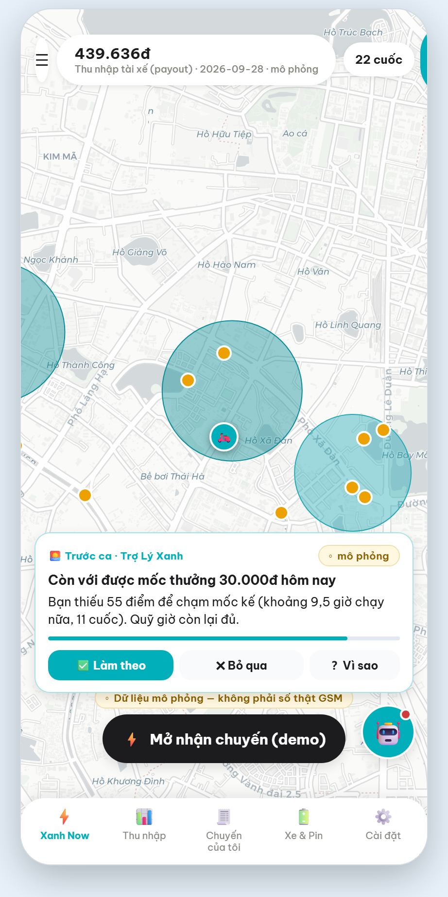
Ảnh trên là màn chính. Điểm thiết kế:
Làm theo · Bỏ qua · ? Vì sao. "Bỏ qua" không chỉ
đóng card mà còn mở cửa sổ im lặng cho chủ đề đó;Ngoài ra có loại "card im lặng": khi advisor không có gì đáng nói, nó hiển thị trạng thái mà không ghi nhận là một lần can thiệp — để không làm phồng tỷ lệ nghe lời bằng những lần nói vô nghĩa.
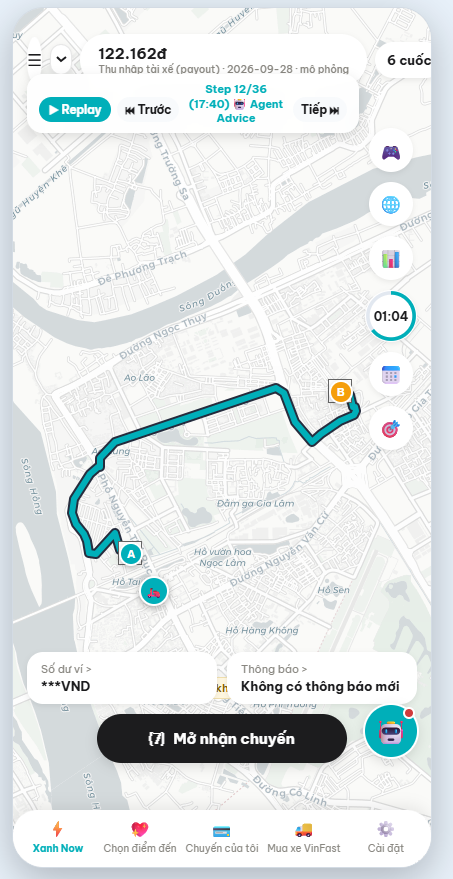 |
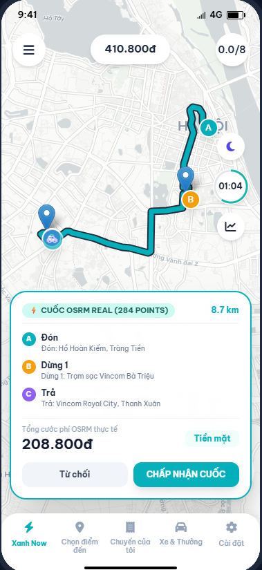 |
Replay ca mô phỏng — payout luỹ tiến, Step 12/36, mốc Agent Advice trên timeline, nhãn "mô phỏng" |
Cuốc trên đường thật — tuyến OSRM 284 điểm, có chặng dừng trạm sạc, cước tính theo policy |
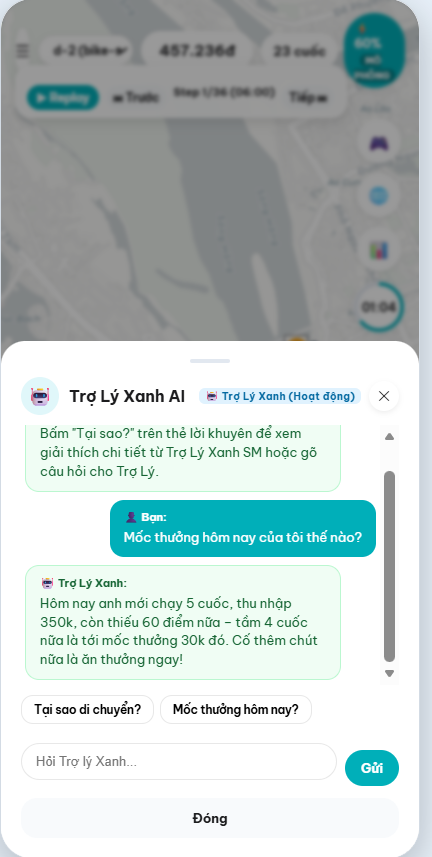
Chat để tài xế hỏi lại. Lưu ý trung thực: đường chạy chính thống cho các số này là adapter → solver S1 (§7.2); text trong ảnh này cần Khánh xác nhận là đã đi qua đường đó hay còn là bản mockup giao diện (đã ghi thành câu hỏi trong tài liệu audit kèm theo).
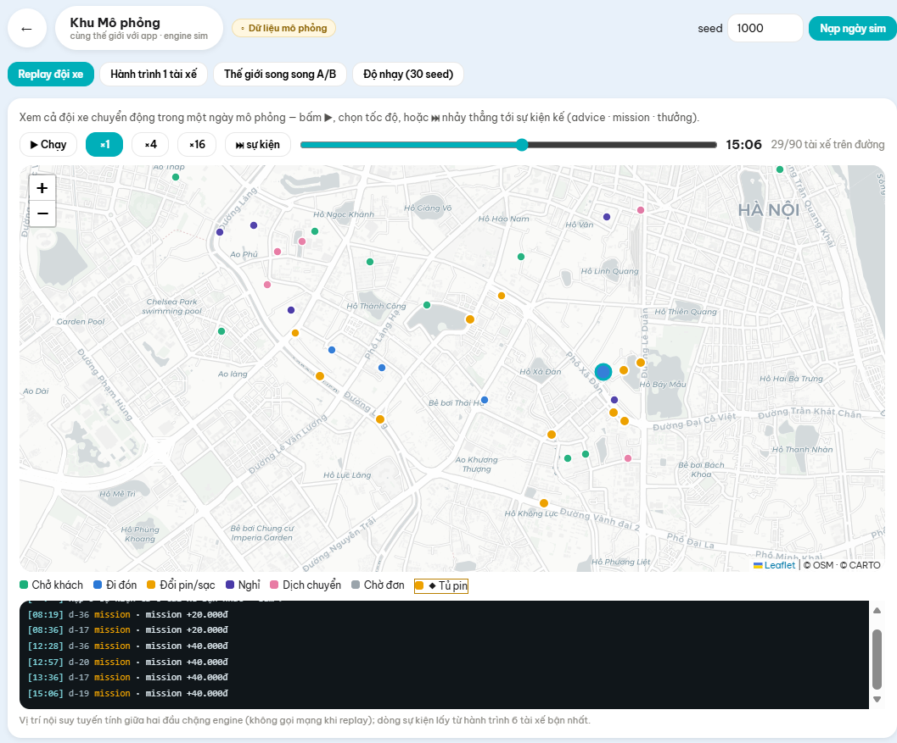
Bốn tab: Replay đội xe (ảnh trên — 29/90 tài xế trên đường lúc 15:06, màu theo trạng thái) ·
Hành trình 1 tài xế · Thế giới song song A/B · Độ nhạy (30 seed).
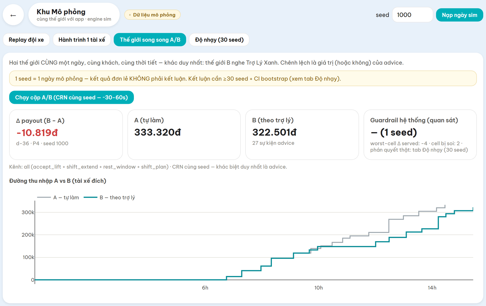
Đây là ảnh chúng em cố ý đưa vào dù nó cho kết quả xấu, vì nó minh hoạ đúng hai điều:
Δ payout = −10.819đ, trong khi §11 báo Δ
dương. Không phải hai số này đánh nhau — chúng là hai cấu hình khác nhau: dòng chú thích
trên ảnh ghi "Kênh: all (accept_lift + shift_extend + rest_window + shift_plan)", tức UI đang
demo tổ hợp đã bị tắt vì đo ra có hại (§3), chứ không phải cấu hình duyệt hiện hành
(positioning wait_only). ⇒ Việc phải làm: đổi cấu hình mặc định của UI về cấu hình duyệt.
Đã ghi vào mục tiêu tuần 3.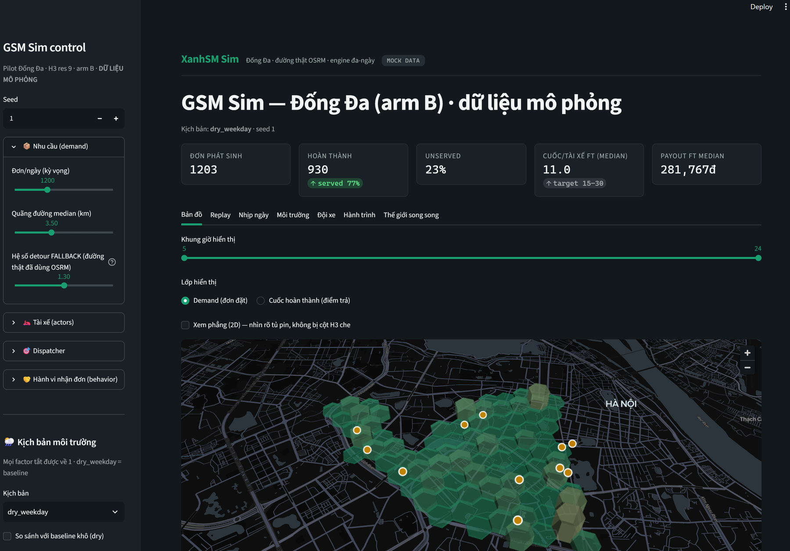
Bảy tab (Bản đồ · Replay · Nhịp ngày · Môi trường · Đội xe · Hành trình · Thế giới song song),
tiêu đề mang nhãn (MOCK).
Tất cả mặt UI ở trên là DONE-CODE / WAITING-VERDICT: chúng chạy được, nhưng các cổng review
trực quan vẫn đang mở (V-09, V-10, V-16, V-18, V-22). Theo quy ước nội bộ, hoãn review không
đồng nghĩa với miễn review.
Đây là lý do nhóm đo bốn tầng chỉ tiêu song song (§7.4) thay vì chỉ đo payout của một tài xế mục tiêu. Một khuyến nghị có thể tốt ở tầng cá nhân nhưng tạo dồn cung hoặc giảm chất lượng phục vụ ở tầng hệ thống; nếu chỉ đo tầng 1 thì ta sẽ không thấy.
| Chỉ tiêu công bằng / hệ thống | Kết quả |
|---|---|
| Gini payout | −0,0069, SIG — bất bình đẳng thu nhập giảm |
| Không ai bị hại theo archetype | 0/7 archetype bị hại; 5/7 dương có ý nghĩa |
| Dồn cục cung (HHI) | real 0,01235 vs oracle 0,01214 — không có dấu hiệu herding |
| 9 tầng chỉ tiêu hệ thống suy giảm | 0/9 ở mọi arm |
| Đường cong độ phủ — Δ tỷ lệ phục vụ | phủ 10% → 25% → 50% → 100%: +0,60 → +0,98 → +1,13 → +1,74 điểm phần trăm |
Dòng cuối là bằng chứng trực tiếp cho phương châm: càng nhiều tài xế dùng, tỷ lệ phục vụ càng tăng — tức lợi ích không phải trò chơi có tổng bằng không giữa các tài xế.
Advisor không đọc và không sửa dispatch. Bằng chứng kiểm được:
src/gsm_sim/dispatcher.py dài 151 dòng và tham chiếu advice|advisor|bridge 0 lần.
Advisor chỉ tác động lên quyết định của tài xế (đứng chờ hay chuyển vùng, nghỉ khi nào), rồi
để hệ thống điều phối của GSM làm việc của nó.
Toàn bộ số trong mục này là MÔ PHỎNG trên dữ liệu MOCK, ghép cặp CRN, bootstrap CI 5000 lần. Không phải hiệu quả đã kiểm chứng ở vận hành GSM.
Đây là câu hỏi trung tâm của tuần 2. Trong mô phỏng, advisor có thể được cho biết λ thật; ngoài đời không bao giờ có λ. Nên nhóm dựng bốn arm với mức thông tin giảm dần:
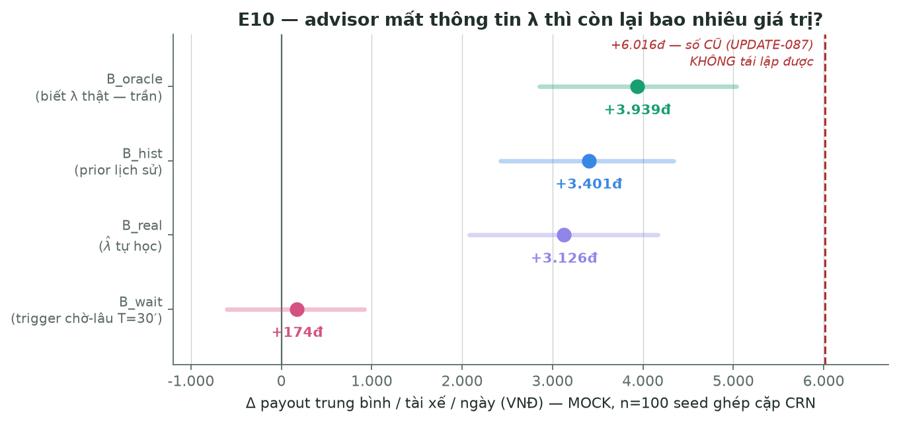
| Arm | Advisor biết gì | Δ payout/tài xế/ngày | CI 95% | MDE | Lớp kết luận |
|---|---|---|---|---|---|
B_oracle |
λ thật (trần lý thuyết) | +3.939đ | [2.854; 5.033] | 1.080 | trần |
B_hist |
prior lịch sử | +3.401đ | [2.423; 4.337] | 957 | 🟢 KQ-GIỮ |
B_real |
tự học từ cuốc đã đón | +3.126đ | [2.080; 4.167] | 1.035 | 🟢 KQ-GIỮ |
B_wait |
chỉ "ô này chờ lâu" (T=30′) | +174đ | [−603; +916] | 770 | KQ-SỤP |
Đọc kết quả: khi advisor không biết λ mà phải tự học (B_real), giá trị vẫn giữ được —
CI của hiệu (Δ_real − Δ_oracle) chứa 0. Nhưng trigger chỉ dựa trên "ô này chờ lâu" thì sụp
hoàn toàn: CI chứa 0, tức không phân biệt được với không làm gì.
Ba caveat bắt buộc kèm (không được trích bảng trên mà bỏ phần này):
⇒ Ngoài đời phần giữ lại thấp hơn con số này. Kết luận là YẾU, không phải "advisor không cần λ".
Một điều nữa phải nói: ở vòng đo trước, cùng cấu hình cho +6.016đ. Sau khi sửa thước đo (§12.2), CI mới là [2.854; 5.033] — không chứa +6.016 ⇒ nhóm không tái lập được con số cũ. Báo cáo này dùng số mới, thấp hơn.
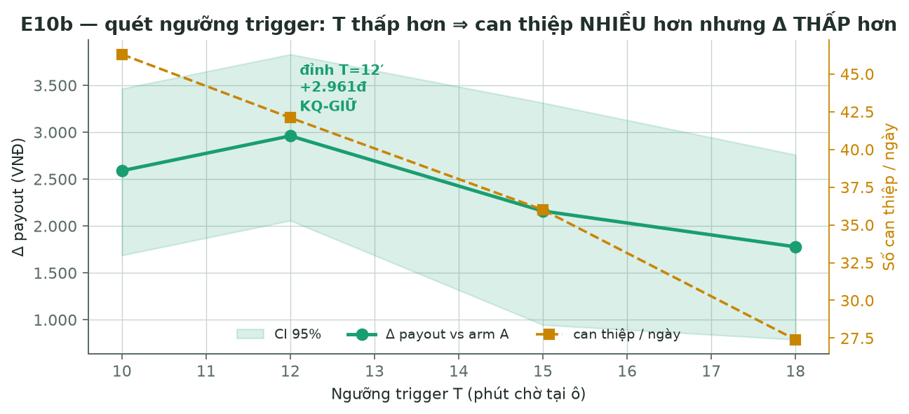
| Ngưỡng T | Δ vs A | CI 95% | Can thiệp/ngày | Giữ được % so oracle | Lớp |
|---|---|---|---|---|---|
| 10′ | +2.589đ | [1.688; 3.464] | 46,3 | 66% | CÒN-MỘT-PHẦN |
| 12′ | +2.961đ | [2.058; 3.830] | 42,1 | 75% | 🟢 KQ-GIỮ |
| 15′ | +2.159đ | [945; 3.314] | 36,0 | — | CÒN-MỘT-PHẦN |
| 18′ | +1.778đ | [788; 2.759] | 27,4 | — | CÒN-MỘT-PHẦN |
Vì sao bảng này quan trọng hơn con số đỉnh: ở T=10′ advisor can thiệp nhiều hơn (46,3 lần/ ngày so với 42,1) nhưng kết quả thấp hơn. Nếu giá trị chỉ đến từ việc nói nhiều thì T=10′ phải cao nhất. Nó không cao nhất ⇒ trigger có tính chọn lọc thật. Kỳ vọng "sẽ quay đầu" này được ghi vào file khoá trước khi đo, nên đây là dự đoán được xác nhận, không phải giải thích sau.
| Loại | Kết quả | Ý nghĩa |
|---|---|---|
| Tất định (fingerprint per-actor) | 15/15 · 10/10 · 5/5 IDENTICAL qua ba vòng đo độc lập (vd 040c79a862f4b6a4) |
Cùng seed ⇒ cùng kết quả từng bit. Nếu không có tính chất này thì mọi Δ vô nghĩa |
| Bất định còn lại | Ba lần hiện thực hoá cùng seed, cùng lưới cho SD ≈ 409đ | Tự khai giới hạn: CI per-seed hẹp hơn bất định thật |
| Cổng thống kê | thước cũ: z = −2,39 (n=30, "OK") → z = −4,41 TREO (n=100) → thước mới: z = −0,38 / +0,82 / −0,95 / −0,16 (OK cả 4 arm) | Cổng đã thực sự bắn và chặn một kết luận sai |
Dòng thứ ba là ví dụ cụ thể cho một bài học phương pháp: cổng chạy ở cỡ mẫu nhỏ không chứng minh được thước lành ở cỡ mẫu lớn. Cùng một sai lệch 2,4 điểm phần trăm, ở n=30 cho z = 2,29 (không bắn) nhưng ở n=100 cho z = 4,20 (bắn).
| Chỉ tiêu | Vòng 1 (5 seed 5100–5104) | Vòng 2 (đường thật, seed 5011) |
|---|---|---|
| Phạm vi chấm | — | 90/90 tài xế |
rest_min_total |
3.772,6′ → 4.774,2′ | 3.689,0′ → 4.041,8′ (+352,8′) |
work_span_p90 |
452,8′ → … | 388,3′ → 370,5′ (−17,8′) |
drive_min_p90 |
— | 314,6′ → 301,2′ (−13,4′) |
veto_fired_n |
— | 175 → 184 |
| Verdict | — | OK, không cờ nào bật |
Đọc đúng cách: kênh vị trí làm tài xế nghỉ nhiều hơn và làm việc ít căng hơn. Ba số này báo ở cột sức khoẻ riêng và không được quy ra tiền — đó là nguyên tắc nhóm tự đặt.
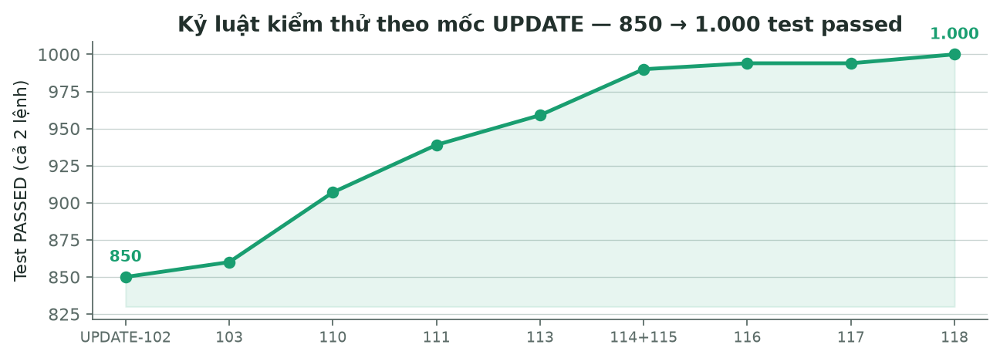
Số test passed (chạy cả hai lệnh) qua các mốc: 850 → 860 → 907 → 939 → 959 → 990 → 994 → 1.000.
Chú thích cần thiết: 1.000 là số test passed (935 + 65). Tổng thu thập là 1.004, trong đó
4 test skip vì GSM chưa cấp danh sách cột cho 4 bảng (trips, driver_penalization_ATA,
public_frauds, public_user_mission_progress) — trong đó trips là bảng cốt lõi. Nghĩa là với
4 bảng này nhóm chưa verify được schema của mình khớp GSM; đã khai thẳng thay vì để test xanh
giả.
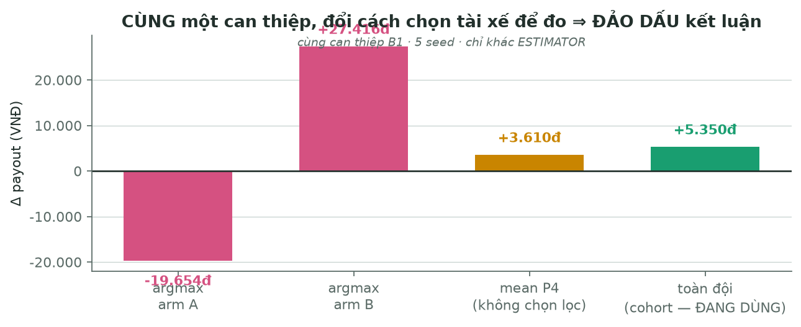
Cùng một can thiệp, cùng 5 seed, chỉ khác cách chọn tài xế để đo:
| Cách đo | Δ payout | |
|---|---|---|
| argmax arm A (chọn tài xế "tốt nhất" ở A) | −19.654đ | ⟵ kết luận: advisor có hại |
| argmax arm B (chọn ở B) | +27.416đ | ⟵ kết luận: advisor cực tốt |
| mean P4 (không chọn lọc) | +3.610đ | |
| toàn đội (cohort — đang dùng) | +5.350đ | ⟵ kết luận đáng tin |
Hai dòng đầu là cùng một dữ liệu. Nguyên nhân: chọn theo cực trị (argmax) thì mọi nhiễu đều bị hồi quy về trung bình, và dấu của Δ phụ thuộc chọn cực trị ở arm nào. Đây là lý do nhóm chuyển sang cohort estimator.
Nếu chỉ có một điều mentor mang về từ báo cáo này, chúng em mong đó là bảng trên: trong mô phỏng, chọn sai thước đo không làm số lệch một chút — nó đảo ngược kết luận.
4/5 kênh advice đang tắt vì đo ra không hiệu quả hoặc có hại (§3). Nhóm coi đây là kết quả dương của việc đo: nếu không có A/B ghép cặp, cả bốn kênh đó đã được ship.
Sau khi công bố kết quả E10, cổng thống kê treo arm oracle (z = −4,41). Truy nguyên: thước đo
tỷ lệ nghe lời trộn hai thứ khác nhau — "tài xế đồng ý" và "hệ thống thực thi được". Sửa thước
(tách followed theo kết cục tại lúc gán, execution_rate riêng) thì cả 4 arm về OK, nhưng
mọi con số phải đo lại và headline giảm từ +5.529đ xuống +3.939đ, đồng thời không tái
lập được +6.016đ của vòng trước.
Nhóm chọn báo con số thấp hơn. Bài học: một cổng chạy ở cỡ mẫu nhỏ không chứng minh thước lành ở cỡ mẫu lớn.
Ba lần trong hai ngày cuối, nhóm phát hiện một bảo đảm đã được viết trong tài liệu và có hàm nhưng không ai nối nguồn vào:
Đối phó: nhóm dựng ba cổng thường trực để họ lỗi này không tái diễn (mọi cờ cấu hình phải có người đọc · không view nào được đọc dữ liệu chưa xảy ra · chỉ một bảng màu trạng thái). Riêng cổng thứ hai còn có test tự chứng minh nó bắn được: tái tạo đúng lỗi gốc rồi đòi phép thử phải phát hiện — vì một cổng luôn xanh không phân biệt được "không có lỗi" với "không đo gì".
Kênh rest_window nói 0/873 lần trong A/B một-ngày, vì bộ nhớ liên-ngày chỉ sống ở chế độ
nhiều ngày. Quan trọng hơn: trong thế giới không mô hình hoá hậu quả của mệt, gợi ý nghỉ về
mặt cấu trúc không thể có giá trị dương — nghỉ chỉ tốn thời gian kiếm tiền. Nên "đo ra 0" ở đây
không chứng minh "gợi ý nghỉ vô ích"; nó chỉ nói mô phỏng đang mù với chiều đó. Nhóm đã viết
plan riêng cho việc này và chưa thực hiện (nhánh thử nghiệm, không ưu tiên).
Sổ nợ có 90 mục, 21 đã đóng, 69 còn mở, mỗi mục có mã, mức nghiêm trọng, bằng chứng và điều kiện mở lại. 20 mục đang chờ người review. Nhóm trình bày đây là kỷ luật, không phải điểm yếu: một flaw có mã và có điều kiện mở lại thì không biến mất trong im lặng.
Ví dụ một flaw tìm được vào đúng ngày phát hành báo cáo: UI tự tính tầm pin bằng công thức
riêng (soc × 1,1) cho mọi tài xế, trong khi engine cho 62,5 km (đội đổi pin) và 117,6 km
(đội sạc) — lệch nhau gần 2×. Tài xế đội đổi pin đang thấy số thổi 1,76 lần. Suite 1.000 test
không bắt được, vì không có test nào so UI với engine. Đã ghi mã D-M3-17, xếp việc đầu tiên
của tuần 3.
Có file GitHub Actions (.github/workflows/ci.yml, 61 dòng, 3 job) và nó đã nằm trên
origin/main, nhưng header của chính file tự khai "CI DRAFT — CHƯA ACTIVE: repo hiện làm việc
local". Nói chính xác: CI đã được viết và đã push, chưa xác nhận là đã chạy. Việc kích hoạt và
xác nhận nằm trong tuần 3.
Thay cho CI, kỷ luật hiện tại đến từ quy trình: mỗi thay đổi có ý nghĩa phải có một file
UPDATE-### ghi rõ cái gì đổi · vì sao · đã kiểm chứng gì · cái gì CHƯA kiểm chứng · flaw phát
sinh. Tới nay có 112 file như vậy.
Ngoài test, nhóm dựng một số cơ chế để việc phát triển không phá thứ đã đo:
| Cơ chế | Giải quyết vấn đề gì |
|---|---|
| Ba cổng thường trực (mới tuần này) | (1) mọi tham số cấu hình phải có người đọc — cấu hình chết sẽ làm người sau quét tham số ra Δ=0 rồi kết luận sai; (2) không view nào được đọc dữ liệu chưa xảy ra; (3) chỉ một bảng màu trạng thái cho toàn bộ UI |
| File khoá tham số trước khi đo (prereg) | Ghi trước tham số · kỳ vọng · điều kiện dừng, kể cả dự đoán có thể sai. Nhờ vậy §11.2 mới nói được "dự đoán được xác nhận" thay vì giải thích sau khi thấy số |
| Fingerprint tất định | Mỗi lần sửa "không đổi hành vi", chạy 5–15 seed và so dấu vân tay từng tài xế. Nếu khác một bit thì thay đổi đó không phải behavior-neutral |
| Script vận hành có thể tái tạo | Sinh lại dữ liệu mock, chạy A/B nhiều seed, dựng catalog dữ liệu, đo từng thí nghiệm — mọi số trong báo cáo này tái tạo được bằng lệnh |
| Một nguồn cấu hình duy nhất | Mọi tham số mô phỏng ở một file; báo cáo và dashboard đọc cùng file đó |
| Sổ nợ có mã | Mỗi flaw có mã, mức nghiêm trọng, bằng chứng, điều kiện mở lại (§12.5) |
Một bẫy vận hành đáng kể đã ghi lại: lệnh test mặc định của repo chỉ thu một trong hai thư mục test, nên "suite xanh" chỉ đúng khi chạy cả hai lệnh. Bẫy này từng làm một con số suite bị báo thiếu — nay đã ghi thành cảnh báo ở đầu tài liệu điều hướng.
Bốn hướng chính, cộng phần dọn nợ đã ghi nhận trong tuần 2:
| Hướng | Nội dung |
|---|---|
| UI/UX | Tinh chỉnh cách trợ lý xuất hiện và cách trình bày lời khuyên; giảm tải nhận thức cho tài xế |
| Làm giàu dữ kiện từ cộng đồng | Thu thập thông tin từ các hội nhóm tài xế để tìm thêm pain point thật. Mọi nguồn cộng đồng phải qua bước kiểm chứng và lọc rủi ro (chống tin sai, tin lỗi thời, thông tin cá nhân) và không được dùng làm nguồn cho số tài chính/chính sách |
| Mô phỏng và thuật toán tối ưu hoá | Tăng độ sát thực tế của thế giới mô phỏng và chất lượng lời khuyên. Gồm việc sửa cách mô phỏng để đo được giá trị của gợi ý nghỉ (§12.4) |
| Nối tối ưu hoá + dữ liệu ngoài → agent | Kết nối kết quả tối ưu hoá với phần gọi API ngoài (thời tiết, mật độ giao thông), rồi đưa qua agent để chuẩn hoá đầu ra cho tài xế: cùng một giọng, cùng một mức chắc chắn, luôn kèm lý do. Đây là phần mở nhóm khuyên mềm ở §8.1 |
Dọn nợ đã ghi nhận: số tầm đi của xe hiển thị trên giao diện chưa khớp phần tính toán bên trong
(§12.5 — việc đầu tiên) · cho giao diện chạy đủ các phần tính toán để phép đo và sản phẩm là một
thứ (Q-14) · dọn ba điểm lệch giữa các mặt UI (§9.4) · đóng các mục chờ review và xác nhận CI
thật sự chạy.
Mọi con số trong báo cáo truy được về file cụ thể. Xem NGUON-SO-LIEU.md đi kèm folder này.
| Thuật ngữ | Nghĩa trong báo cáo |
|---|---|
| arm A / arm B | Hai thế giới song song cùng seed; A = tài xế tự làm, B = có advisor |
| CRN | Common random numbers — dùng chung chuỗi ngẫu nhiên ngoại sinh để giảm phương sai |
| CI 95% | Khoảng tin cậy bootstrap 5000 lần, resample theo seed |
| MDE | Minimum detectable effect — mức hiệu ứng nhỏ nhất phép đo phân biệt được với 0 |
| λ / | Cường độ cầu thật / ước lượng của advisor |
| KQ-GIỮ / KQ-SỤP | Lớp kết luận: giá trị giữ được / mất hẳn khi advisor mất thông tin |
| Gini · HHI | Chỉ số bất bình đẳng thu nhập · chỉ số dồn cục |
DONE-CODE |
Code xong, chưa được review — không gọi là DONE |
Ảnh app tài xế (ui-driver-app-*.png) và Khu Mô phỏng (ui-track-mo-phong.png) do Trần Quốc
Khánh cung cấp. Ảnh Track UI còn lại và dashboard chụp tự động bằng Playwright ngày 01/08/2026.
Bốn biểu đồ sinh từ artifact JSON bằng make_figures.py (đọc số từ file, không nhập tay).